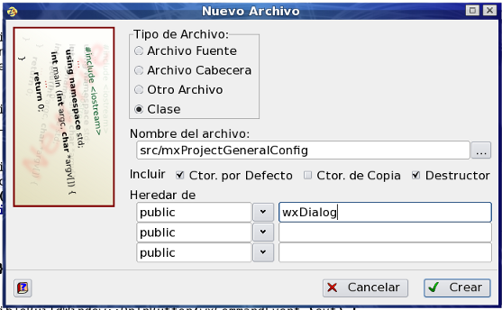

Asistente para Nuevo Archivo o Proyecto
Este cuadro de diálogo permite crear un nuevo archivo o proyecto. Se accede a él mediante la opción Nuevo... del menú Archivo.
Cuando se está trabajando sobre un proyecto, este asistente se inicia en la hoja Archivo para Proyecto, mientras que si no se está editando un proyecto, se inicia en la hoja Nuevo. Si este asistente no aparece puede que ZinjaI esté configurado para crear directamente un archivo en blanco o utilizar la plantilla predeterminda. Puede cambiar esta configuración en la pestaña General del cuadro de diálogo PreferenciasTambien se puede ir directamente a la hoja proyecto mediante la opción Nuevo Proyecto... del menú Archivo.
Las posibles hojas que muestra este asistente son:
Hoja Nuevo
Esta hoja se muestra cuando no se está trabajando en un proyecto. Permite crear un nuevo archivo simple, o un nuevo proyecto. Muestra las posibles opciones para luego continuar en la hoja que corresponda según su elección. Las posibilidades son:
- Archivo en Blanco: crea un nuevo archivo completamente en blanco de inmediato al aceptar.
- Utilizar Plantilla: Crea un nuevo archivo con un esqueleto basico de programa (crea la funcion main e incluye librerias acordes al tipo de programa seleccionado). Al aceptar lleva a la hoja Nuevo Desde Plantilla.
- Proyecto: Crea un nuevo proyecto. A diferencia de un programa simple, el proyecto puede constar de mas de un archivo fuente y guarda tambien otras configuraciones como librerias utilizadas, parametros para el compilador, etc. Al aceptar lleva a la hoja Nuevo Proyecto.
Hoja Nuevo Desde Plantilla
Esta hoja permite crear un archivo para un programa simple a partir de una de las plantillas existentes. Es decir, en lugar de crear un archivo en blanco, se crea un archivo con determinado contenido de acuerdo a la plantilla seleccionada. Por ejemplo, una plantilla puede definir la función main, incluir un conjunto de cabeceras e inicializar determinadas variables. Las plantillas además, pueden predefinir argumentos para el compilador. La lista de plantillas disponibles se está conformada por los archivos que se encuentran en el directorio de plantillas especificado en la pestaña Programa Simple del cuadro de dialogo de Preferencias; por lo que el usuario puede añadir nuevas plantillas guardando archivos en dicho directorio. Ver Plantillas de Codigo).
Además de permitir crear un programa a partir de una plantilla, esta hoja tembien permite determinar cual será la plantilla por defecto. Para ello debe seleccionar el checkbox "Guardar como predeterminada".
Hojas Proyecto
Estas hoja permiten crear un nuevo proyecto. El proyecto consiste inicialmente en un archivo de configuración de proyecto de extensión .zpr. El nombre de este archivo está definido por el nombre ingresado en el cuadro de texto "Nombre del archivo de proyecto", y la ruta del mismo por el cuadro de texto "Ubicación del proyecto". Esta ruta puede ser absoluta (comenzar con "C:\" o "/") o relativa a la carpeta de instalación de ZinjaI. El valor por defecto de este campo se puede definir en la pestaña Rutas del diálogo Preferencias. Es común ubicar el archivo de proyecto junto con todos los fuentes que lo componen en un directorio separado, por lo que si el checkbox "Crear un nuevo directorio" está marcado, se creará un directorio dentro de la ruta definida como ubicación del proyecto, con el mismo nombre que el archivo de proyecto, dentro de la cual se guardarán este archivo y los posibles fuentes que incluya la plantilla seleccionada.
En la lista de plantillas, la opción "<proyecto en blanco>" solo creará el archivo de proyecto, la opción "<incluir archivo y funcion main>" además agregará un primer archivo "main.cpp" (este archivo se crea en la carpeta del proyecto) donde se declará una función main vacía. Las demás opciones de la lista de plantillas se conforman por los subdirectorios que se encuentren en la ruta de plantillas de proyectos (es la misma que la ruta de plantillas de programas simples, definida en la pestaña Programa Simple del cuadro de dialogo de Preferencias), y si se selecciona una de estas, se creará una copia exacta de dicho proyecto en la ubicación del nuevo proyecto.
Hoja Archivo Para Proyecto

Esta hoja se muestra sólo cuando se selecciona la opción Nuevo del menú Archivo mientras se trabaja en un proyecto. Permite agregar uno a más nuevos archivos al proyecto:
- La opicón Archivo Fuente crea un nuevo archivo en blanco en la ruta especificada en "Nombre del archivo" y lo agrega como un fuente al proyecto. Si el nombre del archivo no incluye una extensión, Zinjai le agrega la extensión cpp. La retua puede ser absolluta, o relativa al directorio del proyecto.
- La opicón Archivo Cabecera crea un nuevo archivo en la ruta especificada en "Nombre del archivo" y lo agrega como un cabecera al proyecto. El archivo contendrá inicialmente las directivas de preprocesador que habitualmente se utilizan para evitar redefiniciones si esta cabecera se incluye más de una vez (el nombre la constante de preprocesador que se utliza para ello se determina por el nombre del archivo en mayúsuclas más un guion bajo y la letra H). Si el nombre del archivo no incluye una extensión, Zinjai le agrega la extensión h. La ruta puede ser absoluta, o relativa al directorio del proyecto.
- La opicón Otro Archivo: crea un nuevo archivo en blanco en la ruta especificada en "Nombre del archivo" y lo agrega al proyecto en la rama otros del árbol de proyecto. La ruta puede ser absoluta, o relativa al directorio del proyecto.
- La opción Clase crea dos nuevos archivos (un cpp y un h, que contendrán una clase de con el mismo nombre que el archivo. El archivo cabecera incluirá la declaración de la clase, y el contenido inicial especificado (constructores, destructor, declaración de herencia). El archivo fuente incluirá la declaración de estos métodos, vacios. El nombre del archivo puede ser una ruta relativa al directorio del proyecto o absoluta, pero no debe incluir extensión, ya que zinjai agregará ".cpp" para el fuente y ".h" para la cabecera.